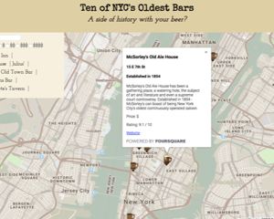

about me
- I'm a freelance web developer, currently working on an app to translate a series of vocabulary-building workbooks into the digital realm. In past professional lives, I've been a children's book editor and career counselor, though I've dabbled with code and software all my life (i.e. played Mouse Practice as a five-year-old).
- In 2018, I won a full scholarship through Grow with Google to complete a Front-End Nanodegree through Udacity, after finishing an initial "challenge" in the top 10% of participants. Since completing the program, I'm looking to transition into full-time development, ideally for a company where my range of interests and my communication skills will be an asset.
- My editorial and problem-solving abilities drive my code and design. I strive to make my work accessible, useful, and enjoyable.
featured projects

Neighborhood Map
A customized Google Map listing ten of NYC's oldest bars. Built in React with Styled Components, using Foursquare's API.
Memory Game
The first significant app I built from scratch (I forewent Udacity's starter files) combining my HTML, CSS, and JavaScript skills.
Arcade Game Remake
I employed Object-Oriented Programming principles to create players, enemies, and game rules in this Frogger clone.
Pixel Art Maker
Feeling creative? This artistic playground uses jQuery to allow users to pick thread and canvas colors and stitch a digital sampler.
 Pure CSS Gameboy
Pure CSS Gameboy
This was a challenge labor of love to increase my familiarity with CSS.